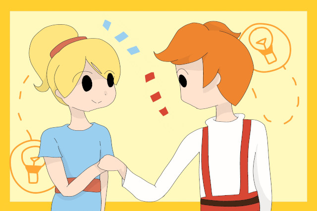

¿Qué es ciencia ciudadana?

Comúnmente, existe una visión de la ciencia que la dibuja como una actividad que se realiza de forma solitaria y apartada del grupo más numeroso de la sociedad, que es desarrollada por científicos asociales y que realizan sus investigaciones de forma privada, casi oculta, y comparten su descubrimientos solamente entre una comunidad selecta de individuos, casi todos hombres, hablando con un vocabulario rebuscado y imposible de entender.